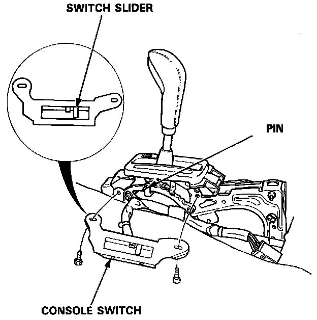

Shift Position Console Switch Replacement

Shift Position Console Switch Replacement
1. Remove the console, then disconnect the 14-P connector from the console switch.
2. Remove the 2 console switch mounting bolts.
3. Position the switch slider to "Neutral" (N).
4. Shift the select lever to "Neutral", then slip the console switch into position.
5. Attach the switch with the 2 bolts.
6. Test the console switch in the P and N positions.
NOTE: The engine should start when the shift lever is in the N position (within the range of free play).
7. Connect the 14-P connector, clamp the harness and install the console.